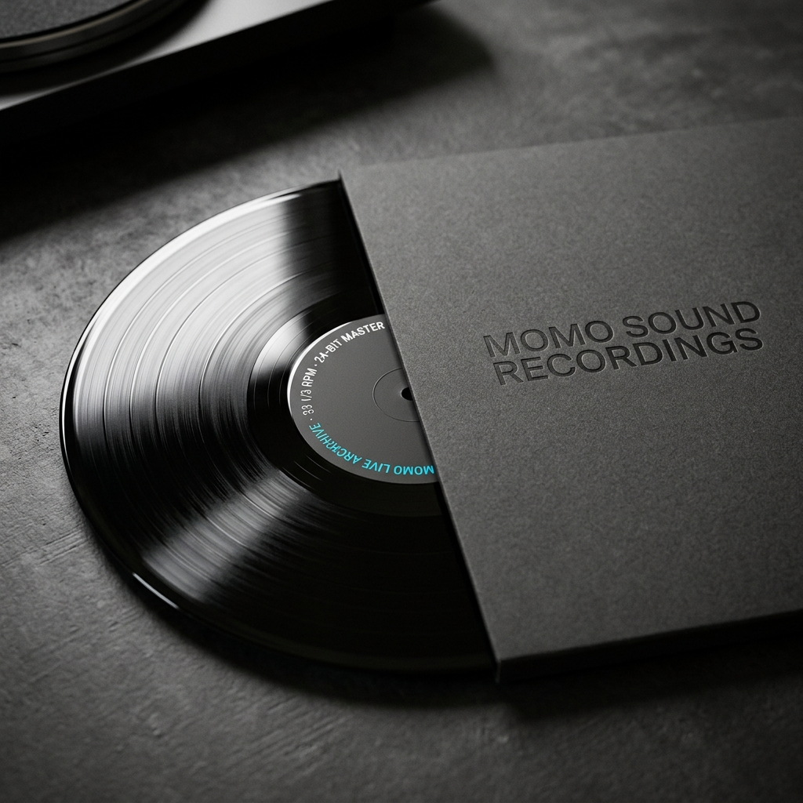

// HIGH RESOLUTION HARDWARE STILL LIFE · 真实实物摄影
VINYL 04 · 收藏级声音黑胶
现场实录限定黑胶声音集
欢迎来访或咨询
180g 重磅高保真黑胶 · 德国压片 · P&R Studio 24-bit 现场同期直录
声音是有实体重量的。全球限量压制 300 张，采用 180g 重磅 Audiophile 纯黑黑胶材质。A面完整收录菲比与 Momo 艺术家团队在排练现场实录的摇滚版《Jingle Bells》及两首未公开的现场即兴 Jam；B面收录 18 人现代爵士大乐队作品。封套附赠 24 页全彩排练纪实胶片摄影画册。
购买这件周边的真实意义与教育支持
黑胶唱片的全部收益直接汇入 Momo 青年原创音乐录音基金，用于扶持优秀学员免费完成人生第一张个人原创作品的多轨棚录。
规格与工艺参数 (SPECIFICATIONS)
唱片规格
12 英寸 / 33⅓ RPM / 180g 高密度重磅 Audiophile 黑胶
母带来源
P&R Studio 24-bit / 96kHz 模拟与数字混合同期直录
压盘工厂
德国顶级专业黑胶压片车间
随盘附赠
24P 纯质纸排练现场胶片印制摄影画册 + 独家数字无损母带下载码
限量发行
全球手工独立编号限量 300 张